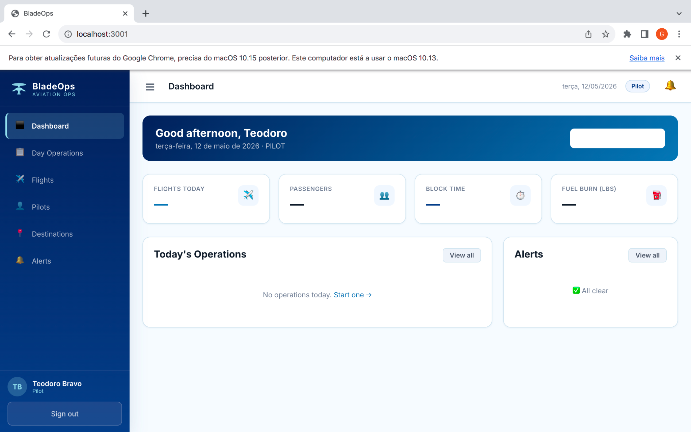
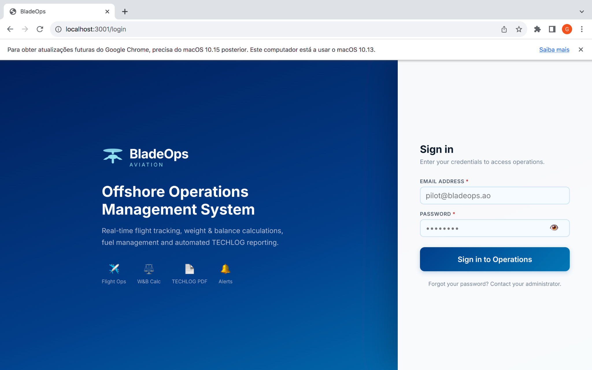

Fernando Calado
Software Developer • IT Support • SAP • Cybersecurity
Technology professional focused on IT support, enterprise systems, web development and cybersecurity. Currently building BladeOps, an operational management platform for aviation and offshore logistics workflows.
Current Project
BladeOps
Current Focus
BladeOps
Aviation & offshore operations management system currently in development.
About Me
I am a Computer Engineering student with experience in technical support, SAP user support and web development. My background includes operational environments where reliability, problem solving and continuity are essential.
I am passionate about technology, cybersecurity, aviation systems and digital innovation, with a strong interest in building practical tools for real operational workflows.
📍 Luanda, Angola
🎓 Computer Engineering
💼 Software Developer / IT Support
Core Skills
Web Development
React, JavaScript, HTML/CSS and modern interface development.
IT Support
Troubleshooting, helpdesk support, hardware/software and enterprise environments.
SAP & Systems
SAP ERP support, tickets, operational workflows and user assistance.
Cybersecurity
Linux, security fundamentals, practical labs and continuous learning.
Featured Project
Aviation Operations Platform
BladeOps
BladeOps is an operational management platform focused on aviation and offshore logistics workflows, designed to support flight operations, passenger handling, manifests, dashboards and operational monitoring.


Key Focus
- Flight operations management
- Passenger and cargo handling
- Operational dashboards
- Manifest control
- Real-time operational overview
Public Showcase
The public showcase presents the product concept and interface previews while keeping source code and sensitive business logic private.
Open GitHub Showcase ↗Experience
May 2022 — Jan 2025
IT Support Technician
Sonangol / Leverage
Technical support, SAP assistance, ticket handling, troubleshooting and operational continuity in enterprise environments.
Sep 2021 — Mar 2022
Web Developer
Antoter, Lda
Development and maintenance of web applications, responsive interfaces and technical problem solving.
Let’s Connect
Open to software development, IT support, SAP support and technology opportunities.